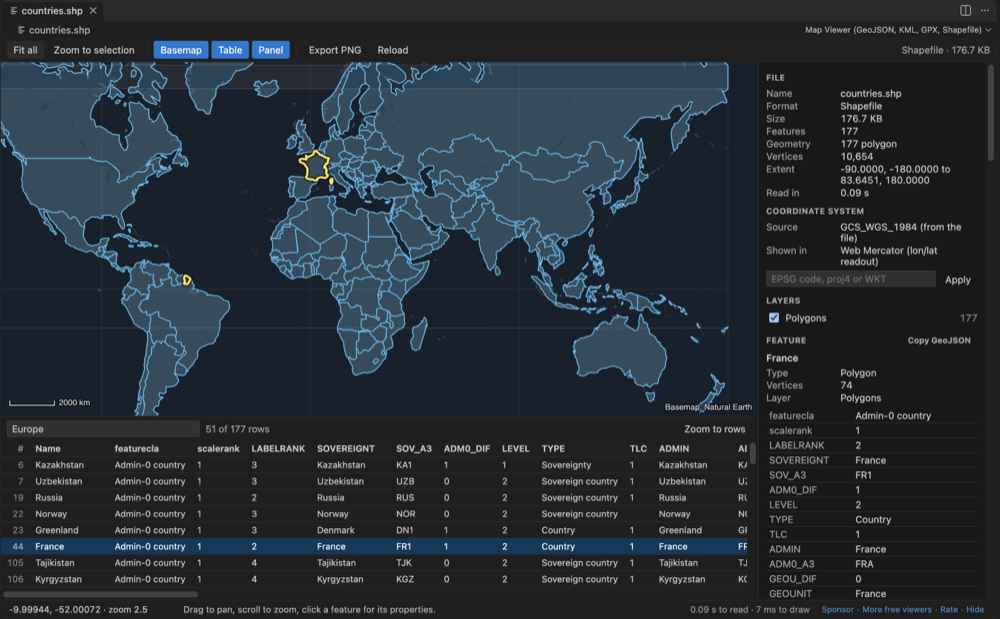

Open files in VS Code and Cursor / Science data
Shapefile to GeoJSON in VS Code
Open the .shp in Map Viewer and run Convert to GeoJSON, KML or CSV. It saves GeoJSON in longitude/latitude (WGS 84), reprojected from the .prj file, with every attribute kept. The same tool turns KML or KMZ into GeoJSON. The map, the attribute table and reprojection on screen are free; the conversion is a Zovo Pro tool with 3 free tries, then USD 19 once.
Free, MIT license. Extension ID zovo.zovo-geo-map-viewer, version 0.2.2. Needs VS Code 1.90.0 or newer.
Also free from Zovo: TIFF Viewer & TIF Viewer, VS Code Marketplace · Open VSX (Cursor, Windsurf).

Steps in VS Code
- Install GeoJSON, KML & GPX Viewer from the Marketplace, or press Ctrl+P (Cmd+P on macOS) and run
ext install zovo.zovo-geo-map-viewer. - Click the
.shpfile in the Explorer, with its.dbf,.prjand.cpgnext to it. For a.zipthat holds a shapefile, right-click it and pick Open in Map Viewer. - Check the map and the attribute table. The side panel shows the coordinate system read from the
.prjfile. - If there is no
.prjfile, type an EPSG code, a proj4 string or WKT in the panel. - Right-click the file in the Explorer and pick Convert, or run Convert to GeoJSON, KML or CSV from the Command Palette (type Zovo Pro or Map Viewer).
- Choose GeoJSON and save. The first 3 runs are free, and a try counts only when the file is saved, so Cancel or Escape costs nothing.
- For KML to GeoJSON, do the same with a
.kmlor.kmzfile.
Where Zovo Pro saves time
The map viewer is free: every format, the attribute table, filters, reprojection from the .prj file, PNG export, and Copy GeoJSON of one selected feature. Saving a whole file as GeoJSON is the Pro tool Convert to GeoJSON, KML or CSV.
Batch convert a folder to GeoJSON converts every map file in a folder and its subfolders to GeoJSON in WGS 84 in one run. A report lists each file as converted, skipped or failed.
With Convert to GeoJSON, KML or CSV (Zovo Pro)
- Run Batch convert a folder to GeoJSON from the Command Palette (type Zovo Pro or Map Viewer).
- Pick the folder. Every map file in it and its subfolders is converted to GeoJSON in WGS 84.
- Read the report: each file is listed as converted, skipped or failed.
Convert to GeoJSON, KML or CSV works 3 times on your computer before it asks for a license, and a try counts only when you get a result. Opening a file shows no popup and no countdown.
Zovo Pro costs USD 19 once. It is not a subscription, and it turns on the Pro tools in every Zovo extension, not only GeoJSON, KML & GPX Viewer. After a card payment (Stripe) your license key shows on the next page. In VS Code, run "Zovo Pro: Enter Zovo Pro license key" from the Command Palette and paste it. The key is checked on your computer, with no network call. With GitHub Sponsors, pick the "$19 one time" tier, then run "Zovo Pro: I already paid: unlock with GitHub Sponsors" and sign in with the same GitHub account. With PayPal, send USD 19 with "Zovo Pro" in the note and the key comes by email within a day.
A team of 5: USD 59 once, by card or by PayPal. Every rule and every Pro tool is on the Zovo Pro page.
Steps in Cursor, Windsurf or VSCodium
- Open the Extensions view with Ctrl+Shift+X (Cmd+Shift+X on macOS).
- Search for
zovo.zovo-geo-map-viewerand click Install. Cursor, Windsurf and VSCodium install from Open VSX, where it is published aszovo/zovo-geo-map-viewer. - If your editor has no gallery, download the .vsix from the Open VSX page and run "Extensions: Install from VSIX...".
- Then use it the same way as in VS Code.
What GeoJSON, KML & GPX Viewer handles
- Saves a shapefile, KML, KMZ, GPX, TopoJSON, WKT, CSV or GeoJSON as GeoJSON, KML, or CSV with a WKT column.
- Reprojects to longitude/latitude (WGS 84) from the
.prjfile, or from the CRS you type. - Keeps every attribute, and reads attribute encodings from
.cpg. - Points, lines, polygons with holes, and Z and M values.
- KML folders, styles, MultiGeometry and gx:Track are read. KML NetworkLinks and remote icons are never loaded.
- Works offline, also in Remote SSH, WSL, Dev Containers and Codespaces.
What it does not do
- Output is GeoJSON, KML or CSV. It does not write shapefiles, GeoPackage or other GDAL formats; use ogr2ogr or QGIS for those.
- It does not simplify shapes to make the GeoJSON smaller. mapshaper does that.
- Files above 512 MB are not read unless you change
geoMapViewer.maxFileMB.
Other options
- ogr2ogr (GDAL).
ogr2ogr -f GeoJSON -t_srs EPSG:4326 out.geojson in.shpconverts and reprojects in one line. Free, reads almost every vector format, and the better choice for scripts and big batches. - QGIS. Free desktop GIS. Right-click the layer, pick Export, then Save Features As, and choose GeoJSON. Good when you also need to edit or style the data.
- geopandas. Python library.
geopandas.read_file('in.shp').to_crs(4326).to_file('out.geojson', driver='GeoJSON')does it inside a Python workflow. - mapshaper. Runs in the browser on your own machine and as a command-line tool. It can also simplify shapes, which makes large GeoJSON files much smaller.
Install counts and Open VSX status were checked on 10 November 2026. Descriptions in quotes are the extensions' own.
Questions
How do I convert KML to GeoJSON?
Open the .kml or .kmz and run Convert to GeoJSON, KML or CSV. KML folders, styles, MultiGeometry and gx:Track are read. ogr2ogr and QGIS can do it too.
What if my shapefile has no .prj file?
Type the EPSG code, a proj4 string or WKT in the panel. The converter reprojects from the CRS you type.
Can I copy one feature as GeoJSON for free?
Yes. Click the feature on the map and use Copy GeoJSON in the side panel. Saving the whole file is the Pro tool.
Is my data uploaded?
No. The webview content security policy allows no remote address, the basemap is a file inside the extension, and there is no telemetry.
Does it work in Cursor or Windsurf?
Cursor and Windsurf install extensions from Open VSX. Search for GeoJSON Viewer in their Extensions view and install it there.
More about GeoJSON, KML & GPX Viewer
Read the GeoJSON, KML & GPX Viewer page for every feature and setting, or the source code on GitHub.
Related guides
- TIFF Viewer & TIF Viewer on the VS Code Marketplace (also on Open VSX). Opens TIFF and GeoTIFF images, 16-bit included, in VS Code.
- See the distance and elevation gain of a GPX file
- A free NetCDF viewer that runs in VS Code
- Open an HDF5 (.h5) file in VS Code
- Compare two NetCDF files
Support this work
If this extension saves you time, you can support the work on GitHub Sponsors. Monthly tiers start at $5, and one-time tiers start at $15. Sponsorship is optional, and the tool works the same without it.
Need your format supported?
Open a format request with a sample file, and I reply there whether it can be done. For USD 299 once, through this GitHub Sponsors tier, I add your file format or a missing feature to this extension, with tests, within 7 days.